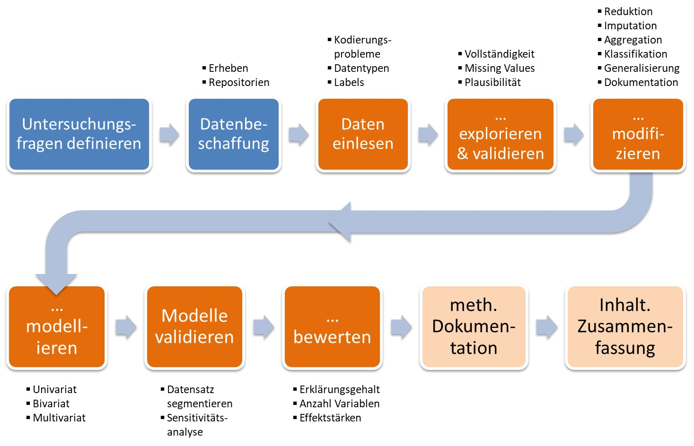
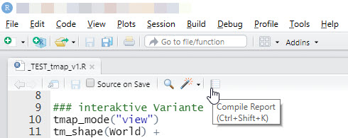
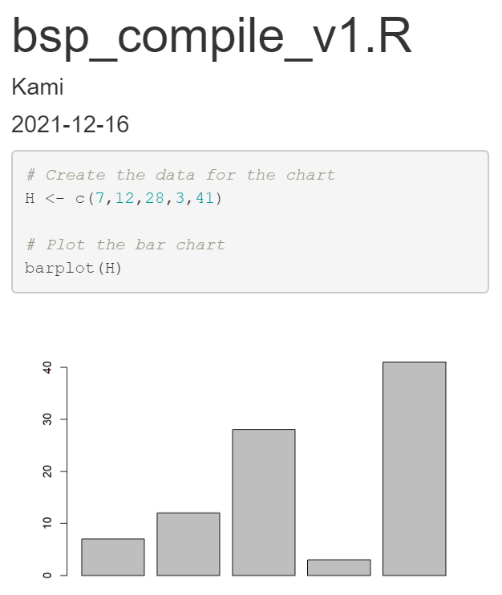
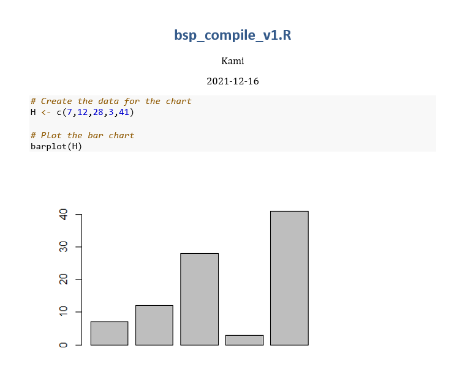
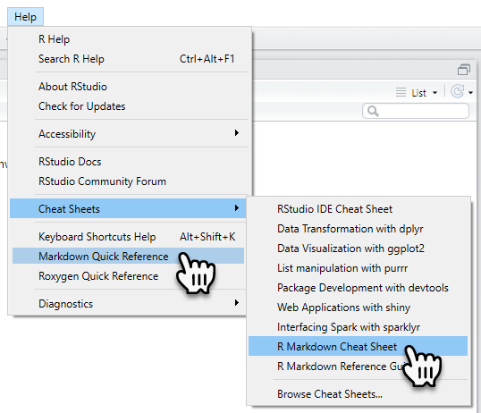
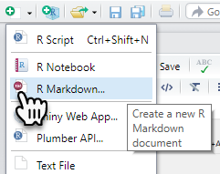
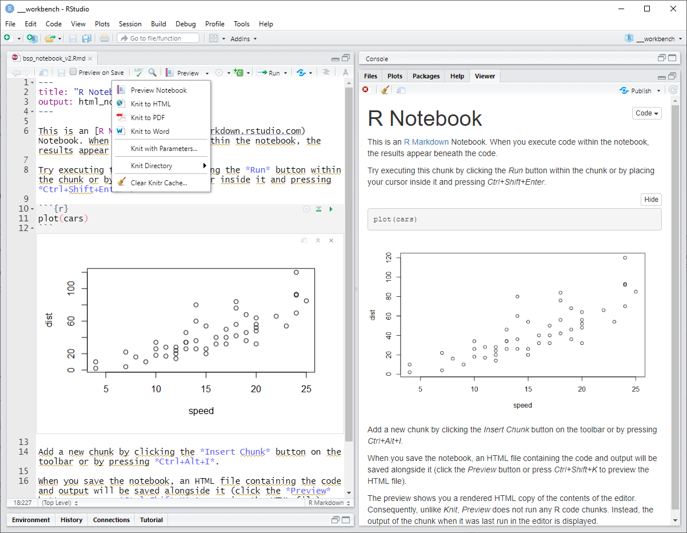
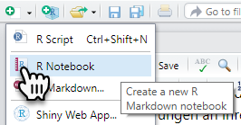
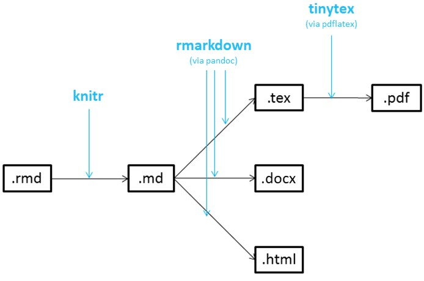
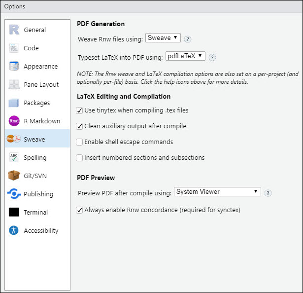

<!DOCTYPE html>
<html lang="" xml:lang="">
<head>

  <meta charset="utf-8" />
  <meta http-equiv="X-UA-Compatible" content="IE=edge" />
  <title>11 Addendum 1: Spreading the Word | How 2 do Things with even more Numbers</title>
  <meta name="description" content="11 Addendum 1: Spreading the Word | How 2 do Things with even more Numbers" />
  <meta name="generator" content="bookdown 0.24 and GitBook 2.6.7" />

  <meta property="og:title" content="11 Addendum 1: Spreading the Word | How 2 do Things with even more Numbers" />
  <meta property="og:type" content="book" />
  
  
  
  

  <meta name="twitter:card" content="summary" />
  <meta name="twitter:title" content="11 Addendum 1: Spreading the Word | How 2 do Things with even more Numbers" />
  
  
  

<meta name="author" content="Kami Höferl | https://orcid.org/0000-0002-5397-180X" />


  <meta name="viewport" content="width=device-width, initial-scale=1" />
  <meta name="apple-mobile-web-app-capable" content="yes" />
  <meta name="apple-mobile-web-app-status-bar-style" content="black" />
  
  
<link rel="prev" href="81_atHome_3.html"/>
<link rel="next" href="99_lit.html"/>
<script src="libs/header-attrs-2.12/header-attrs.js"></script>
<script src="libs/jquery-3.6.0/jquery-3.6.0.min.js"></script>
<script src="https://cdn.jsdelivr.net/npm/fuse.js@6.4.6/dist/fuse.min.js"></script>
<link href="libs/gitbook-2.6.7/css/style.css" rel="stylesheet" />
<link href="libs/gitbook-2.6.7/css/plugin-table.css" rel="stylesheet" />
<link href="libs/gitbook-2.6.7/css/plugin-bookdown.css" rel="stylesheet" />
<link href="libs/gitbook-2.6.7/css/plugin-highlight.css" rel="stylesheet" />
<link href="libs/gitbook-2.6.7/css/plugin-search.css" rel="stylesheet" />
<link href="libs/gitbook-2.6.7/css/plugin-fontsettings.css" rel="stylesheet" />
<link href="libs/gitbook-2.6.7/css/plugin-clipboard.css" rel="stylesheet" />


<link href="libs/anchor-sections-1.1.0/anchor-sections.css" rel="stylesheet" />
<link href="libs/anchor-sections-1.1.0/anchor-sections-hash.css" rel="stylesheet" />
<script src="libs/anchor-sections-1.1.0/anchor-sections.js"></script>
<html>

  <head>
  <script>
    window.addEventListener("load", () => {
        const enabled = document.querySelectorAll(".fullscreen-enabled");
        for (let i = 0; i < enabled.length; i++) {
            enabled[i].style.cursor = "pointer";
            enabled[i].onclick = () => {
                enabled[i].requestFullscreen();
            };
        }
    });
  </script>
  </head>

  <body>
  <!-- body content here -->
  </body>

</html>


<style type="text/css">
pre > code.sourceCode { white-space: pre; position: relative; }
pre > code.sourceCode > span { display: inline-block; line-height: 1.25; }
pre > code.sourceCode > span:empty { height: 1.2em; }
.sourceCode { overflow: visible; }
code.sourceCode > span { color: inherit; text-decoration: inherit; }
pre.sourceCode { margin: 0; }
@media screen {
div.sourceCode { overflow: auto; }
}
@media print {
pre > code.sourceCode { white-space: pre-wrap; }
pre > code.sourceCode > span { text-indent: -5em; padding-left: 5em; }
}
pre.numberSource code
  { counter-reset: source-line 0; }
pre.numberSource code > span
  { position: relative; left: -4em; counter-increment: source-line; }
pre.numberSource code > span > a:first-child::before
  { content: counter(source-line);
    position: relative; left: -1em; text-align: right; vertical-align: baseline;
    border: none; display: inline-block;
    -webkit-touch-callout: none; -webkit-user-select: none;
    -khtml-user-select: none; -moz-user-select: none;
    -ms-user-select: none; user-select: none;
    padding: 0 4px; width: 4em;
    color: #aaaaaa;
  }
pre.numberSource { margin-left: 3em; border-left: 1px solid #aaaaaa;  padding-left: 4px; }
div.sourceCode
  {   }
@media screen {
pre > code.sourceCode > span > a:first-child::before { text-decoration: underline; }
}
code span.al { color: #ff0000; } /* Alert */
code span.an { color: #008000; } /* Annotation */
code span.at { } /* Attribute */
code span.bu { } /* BuiltIn */
code span.cf { color: #0000ff; } /* ControlFlow */
code span.ch { color: #008080; } /* Char */
code span.cn { } /* Constant */
code span.co { color: #008000; } /* Comment */
code span.cv { color: #008000; } /* CommentVar */
code span.do { color: #008000; } /* Documentation */
code span.er { color: #ff0000; font-weight: bold; } /* Error */
code span.ex { } /* Extension */
code span.im { } /* Import */
code span.in { color: #008000; } /* Information */
code span.kw { color: #0000ff; } /* Keyword */
code span.op { } /* Operator */
code span.ot { color: #ff4000; } /* Other */
code span.pp { color: #ff4000; } /* Preprocessor */
code span.sc { color: #008080; } /* SpecialChar */
code span.ss { color: #008080; } /* SpecialString */
code span.st { color: #008080; } /* String */
code span.va { } /* Variable */
code span.vs { color: #008080; } /* VerbatimString */
code span.wa { color: #008000; font-weight: bold; } /* Warning */
</style>

<style type="text/css">
/* Used with Pandoc 2.11+ new --citeproc when CSL is used */
div.csl-bib-body { }
div.csl-entry {
  clear: both;
}
.hanging div.csl-entry {
  margin-left:2em;
  text-indent:-2em;
}
div.csl-left-margin {
  min-width:2em;
  float:left;
}
div.csl-right-inline {
  margin-left:2em;
  padding-left:1em;
}
div.csl-indent {
  margin-left: 2em;
}
</style>

<link rel="stylesheet" href="style.css" type="text/css" />
</head>

<body>


  <div class="book without-animation with-summary font-size-2 font-family-1" data-basepath=".">

    <div class="book-summary">
      <nav role="navigation">

<ul class="summary">
<li><a href="index.html#howdy">Howdy*<span></span></a></li>
<li class="chapter" data-level="1" data-path="01_syllabus.html"><a href="01_syllabus.html"><i class="fa fa-check"></i><b>1</b> Ouvertüre (aka “Syllabus”)<span></span></a>
<ul>
<li class="chapter" data-level="1.1" data-path="01_syllabus.html"><a href="01_syllabus.html#lernziele"><i class="fa fa-check"></i><b>1.1</b> Lernziele<span></span></a></li>
<li class="chapter" data-level="1.2" data-path="01_syllabus.html"><a href="01_syllabus.html#zeitplanung"><i class="fa fa-check"></i><b>1.2</b> Zeitplanung<span></span></a></li>
<li class="chapter" data-level="1.3" data-path="01_syllabus.html"><a href="01_syllabus.html#rulez-of-the-game"><i class="fa fa-check"></i><b>1.3</b> Rulez of the Game<span></span></a></li>
<li class="chapter" data-level="1.4" data-path="01_syllabus.html"><a href="01_syllabus.html#bewertungskriterien"><i class="fa fa-check"></i><b>1.4</b> Bewertungskriterien<span></span></a></li>
<li class="chapter" data-level="1.5" data-path="01_syllabus.html"><a href="01_syllabus.html#formelles-zu-den-übungsarbeiten-homes"><i class="fa fa-check"></i><b>1.5</b> Formelles zu den Übungsarbeiten (@Homes)<span></span></a></li>
<li class="chapter" data-level="1.6" data-path="01_syllabus.html"><a href="01_syllabus.html#empfehlung-zur-eingesetzten-software"><i class="fa fa-check"></i><b>1.6</b> Empfehlung zur eingesetzten Software<span></span></a></li>
<li class="chapter" data-level="1.7" data-path="01_syllabus.html"><a href="01_syllabus.html#ausgewählte-hilfestellungen-zum-thema-r-und-rstudio"><i class="fa fa-check"></i><b>1.7</b> Ausgewählte Hilfestellungen zum Thema R und RStudio<span></span></a></li>
<li class="chapter" data-level="1.8" data-path="01_syllabus.html"><a href="01_syllabus.html#literatur-zur-lehrveranstaltung"><i class="fa fa-check"></i><b>1.8</b> Literatur zur Lehrveranstaltung<span></span></a></li>
</ul></li>
<li class="chapter" data-level="2" data-path="02_why.html"><a href="02_why.html"><i class="fa fa-check"></i><b>2</b> Wozu noch mehr Verfahren?<span></span></a>
<ul>
<li><a href="02_why.html#zielsetzung-dieser-einheit">📢 Zielsetzung dieser Einheit<span></span></a></li>
<li class="chapter" data-level="2.1" data-path="02_why.html"><a href="02_why.html#recap-zur-rolle-der-methoden-in-der-empirischen-forschung"><i class="fa fa-check"></i><b>2.1</b> Recap: Zur Rolle der Methoden in der empirischen Forschung<span></span></a></li>
<li class="chapter" data-level="2.2" data-path="02_why.html"><a href="02_why.html#multivariate-verfahren---ein-kurzer-überblick"><i class="fa fa-check"></i><b>2.2</b> Multivariate Verfahren - ein kurzer Überblick<span></span></a></li>
<li class="chapter" data-level="2.3" data-path="02_why.html"><a href="02_why.html#quantitative-inhaltsanalyse---ein-erster-einblick"><i class="fa fa-check"></i><b>2.3</b> Quantitative Inhaltsanalyse - ein erster Einblick<span></span></a></li>
</ul></li>
<li class="chapter" data-level="3" data-path="03_warmup_1.html"><a href="03_warmup_1.html"><i class="fa fa-check"></i><b>3</b> Warmup 1: Messen und Skalen<span></span></a>
<ul>
<li><a href="03_warmup_1.html#zielsetzung-dieser-einheit-1">📢 Zielsetzung dieser Einheit<span></span></a></li>
<li class="chapter" data-level="3.1" data-path="03_warmup_1.html"><a href="03_warmup_1.html#was-passiert-beim-messen"><i class="fa fa-check"></i><b>3.1</b> Was passiert beim Messen?<span></span></a></li>
<li class="chapter" data-level="3.2" data-path="03_warmup_1.html"><a href="03_warmup_1.html#skalenniveaus-reloaded"><i class="fa fa-check"></i><b>3.2</b> Skalenniveaus (reloaded)<span></span></a></li>
</ul></li>
<li class="chapter" data-level="4" data-path="04_warmup_2.html"><a href="04_warmup_2.html"><i class="fa fa-check"></i><b>4</b> Warmup 2: Wissenschaftliche Datenanalyse<span></span></a>
<ul>
<li><a href="04_warmup_2.html#zielsetzung-dieser-einheit-2">📢 Zielsetzung dieser Einheit<span></span></a></li>
<li class="chapter" data-level="4.1" data-path="04_warmup_2.html"><a href="04_warmup_2.html#daten-analysieren---aber-wie"><i class="fa fa-check"></i><b>4.1</b> Daten analysieren - aber wie?<span></span></a></li>
<li class="chapter" data-level="4.2" data-path="04_warmup_2.html"><a href="04_warmup_2.html#anforderungen-an-eine-wissenschaftliche-datenanalyse"><i class="fa fa-check"></i><b>4.2</b> Anforderungen an eine wissenschaftliche Datenanalyse<span></span></a></li>
<li class="chapter" data-level="4.3" data-path="04_warmup_2.html"><a href="04_warmup_2.html#daten-finden-und-validieren"><i class="fa fa-check"></i><b>4.3</b> Daten finden und validieren<span></span></a></li>
</ul></li>
<li class="chapter" data-level="5" data-path="05_multireg_I.html"><a href="05_multireg_I.html"><i class="fa fa-check"></i><b>5</b> Multiple Regression I: Grundlagen linearer Modelle<span></span></a>
<ul>
<li><a href="05_multireg_I.html#zielsetzung-dieser-einheit-3">📢 Zielsetzung dieser Einheit<span></span></a></li>
<li class="chapter" data-level="5.1" data-path="05_multireg_I.html"><a href="05_multireg_I.html#ouvert-reg1"><i class="fa fa-check"></i><b>5.1</b> Ouvertüre<span></span></a></li>
<li class="chapter" data-level="5.2" data-path="05_multireg_I.html"><a href="05_multireg_I.html#dataimport-reg1"><i class="fa fa-check"></i><b>5.2</b> Daten importieren<span></span></a></li>
<li class="chapter" data-level="5.3" data-path="05_multireg_I.html"><a href="05_multireg_I.html#daten-validieren"><i class="fa fa-check"></i><b>5.3</b> Daten validieren<span></span></a>
<ul>
<li class="chapter" data-level="5.3.1" data-path="05_multireg_I.html"><a href="05_multireg_I.html#map-impfquoten"><i class="fa fa-check"></i><b>5.3.1</b> Ein Exkurs: Die räumliche Variabilität der Impfquoten<span></span></a></li>
</ul></li>
<li class="chapter" data-level="5.4" data-path="05_multireg_I.html"><a href="05_multireg_I.html#die-mathematischen-grundlagen-linearer-modelle"><i class="fa fa-check"></i><b>5.4</b> Die mathematischen Grundlagen linearer Modelle<span></span></a></li>
<li class="chapter" data-level="5.5" data-path="05_multireg_I.html"><a href="05_multireg_I.html#die-gedankliche-modellbildung"><i class="fa fa-check"></i><b>5.5</b> Die gedankliche Modellbildung<span></span></a></li>
<li class="chapter" data-level="5.6" data-path="05_multireg_I.html"><a href="05_multireg_I.html#ein-blick-auf-die-gewählten-variablen"><i class="fa fa-check"></i><b>5.6</b> Ein Blick auf die gewählten Variablen<span></span></a>
<ul>
<li class="chapter" data-level="5.6.1" data-path="05_multireg_I.html"><a href="05_multireg_I.html#ztrans"><i class="fa fa-check"></i><b>5.6.1</b> Standardisierung von Variablen<span></span></a></li>
<li class="chapter" data-level="5.6.2" data-path="05_multireg_I.html"><a href="05_multireg_I.html#korrel-reg1"><i class="fa fa-check"></i><b>5.6.2</b> Beziehungen der Variablen zueinander<span></span></a></li>
</ul></li>
<li class="chapter" data-level="5.7" data-path="05_multireg_I.html"><a href="05_multireg_I.html#die-modellbildung"><i class="fa fa-check"></i><b>5.7</b> Die Modellbildung<span></span></a>
<ul>
<li class="chapter" data-level="5.7.1" data-path="05_multireg_I.html"><a href="05_multireg_I.html#referenzmodell"><i class="fa fa-check"></i><b>5.7.1</b> Ein alternatives Modell<span></span></a></li>
</ul></li>
<li class="chapter" data-level="5.8" data-path="05_multireg_I.html"><a href="05_multireg_I.html#annahmen"><i class="fa fa-check"></i><b>5.8</b> Überprüfung der Modellannahmen<span></span></a>
<ul>
<li class="chapter" data-level="5.8.1" data-path="05_multireg_I.html"><a href="05_multireg_I.html#prüfung-des-linearen-zusammenhangs"><i class="fa fa-check"></i><b>5.8.1</b> Prüfung des linearen Zusammenhangs<span></span></a></li>
<li class="chapter" data-level="5.8.2" data-path="05_multireg_I.html"><a href="05_multireg_I.html#prüfung-der-unabhängigkeit-der-erklärenden-variablen-multikollinearität"><i class="fa fa-check"></i><b>5.8.2</b> Prüfung der Unabhängigkeit der erklärenden Variablen (“Multikollinearität”)<span></span></a></li>
<li class="chapter" data-level="5.8.3" data-path="05_multireg_I.html"><a href="05_multireg_I.html#prüfung-der-normalverteilung-der-residuen"><i class="fa fa-check"></i><b>5.8.3</b> Prüfung der Normalverteilung der Residuen<span></span></a></li>
<li class="chapter" data-level="5.8.4" data-path="05_multireg_I.html"><a href="05_multireg_I.html#prüfung-der-konstanz-der-varianz-der-residuen-homoskedastizität"><i class="fa fa-check"></i><b>5.8.4</b> Prüfung der Konstanz der Varianz der Residuen (“Homoskedastizität”)<span></span></a></li>
<li class="chapter" data-level="5.8.5" data-path="05_multireg_I.html"><a href="05_multireg_I.html#prüfung-auf-autokorrelation"><i class="fa fa-check"></i><b>5.8.5</b> Prüfung auf Autokorrelation<span></span></a></li>
</ul></li>
</ul></li>
<li class="chapter" data-level="6" data-path="06_multireg_II.html"><a href="06_multireg_II.html"><i class="fa fa-check"></i><b>6</b> Multiple Regression II: Qualitative Variablen einbinden<span></span></a>
<ul>
<li><a href="06_multireg_II.html#zielsetzung-dieser-einheit-4">📢 Zielsetzung dieser Einheit<span></span></a></li>
<li class="chapter" data-level="6.1" data-path="06_multireg_II.html"><a href="06_multireg_II.html#ouvertüre"><i class="fa fa-check"></i><b>6.1</b> Ouvertüre<span></span></a></li>
<li class="chapter" data-level="6.2" data-path="06_multireg_II.html"><a href="06_multireg_II.html#gedankliche-modellbildung"><i class="fa fa-check"></i><b>6.2</b> Gedankliche Modellbildung<span></span></a></li>
<li class="chapter" data-level="6.3" data-path="06_multireg_II.html"><a href="06_multireg_II.html#daten-importieren"><i class="fa fa-check"></i><b>6.3</b> Daten importieren<span></span></a></li>
<li class="chapter" data-level="6.4" data-path="06_multireg_II.html"><a href="06_multireg_II.html#die-bundeslandzugehörigkeit-der-bezirke-ermitteln"><i class="fa fa-check"></i><b>6.4</b> Die Bundeslandzugehörigkeit der Bezirke ermitteln<span></span></a></li>
<li class="chapter" data-level="6.5" data-path="06_multireg_II.html"><a href="06_multireg_II.html#qualVaria"><i class="fa fa-check"></i><b>6.5</b> Qualitative Variablen in Regressionsmodellen nutzen<span></span></a></li>
<li class="chapter" data-level="6.6" data-path="06_multireg_II.html"><a href="06_multireg_II.html#der-einfluß-des-bundeslandes-auf-die-impfquote"><i class="fa fa-check"></i><b>6.6</b> Der Einfluß des Bundeslandes auf die Impfquote<span></span></a>
<ul>
<li class="chapter" data-level="6.6.1" data-path="06_multireg_II.html"><a href="06_multireg_II.html#standardisieren-der-metrischen-variablen"><i class="fa fa-check"></i><b>6.6.1</b> Standardisieren der metrischen Variablen<span></span></a></li>
<li class="chapter" data-level="6.6.2" data-path="06_multireg_II.html"><a href="06_multireg_II.html#reproduktion-unseres-referenzmodells-aus-einheit-refreg1"><i class="fa fa-check"></i><b>6.6.2</b> Reproduktion unseres Referenzmodells aus Einheit @ref(reg1)<span></span></a></li>
<li class="chapter" data-level="6.6.3" data-path="06_multireg_II.html"><a href="06_multireg_II.html#erweiterung-des-modells-um-die-bundeslandzugehörigkeit-der-bezirke"><i class="fa fa-check"></i><b>6.6.3</b> Erweiterung des Modells um die Bundeslandzugehörigkeit der Bezirke<span></span></a></li>
<li class="chapter" data-level="6.6.4" data-path="06_multireg_II.html"><a href="06_multireg_II.html#modelloptimierung"><i class="fa fa-check"></i><b>6.6.4</b> Modelloptimierung<span></span></a></li>
</ul></li>
<li class="chapter" data-level="6.7" data-path="06_multireg_II.html"><a href="06_multireg_II.html#abschließendes-prüfen-der-modellannahmen"><i class="fa fa-check"></i><b>6.7</b> Abschließendes Prüfen der Modellannahmen<span></span></a>
<ul>
<li class="chapter" data-level="6.7.1" data-path="06_multireg_II.html"><a href="06_multireg_II.html#prüfung-des-linearen-zusammenhangs-1"><i class="fa fa-check"></i><b>6.7.1</b> Prüfung des linearen Zusammenhangs<span></span></a></li>
<li class="chapter" data-level="6.7.2" data-path="06_multireg_II.html"><a href="06_multireg_II.html#prüfung-der-normalverteilung-der-residuen-1"><i class="fa fa-check"></i><b>6.7.2</b> Prüfung der Normalverteilung der Residuen<span></span></a></li>
<li class="chapter" data-level="6.7.3" data-path="06_multireg_II.html"><a href="06_multireg_II.html#prüfung-des-erwartungswerts-der-residuen"><i class="fa fa-check"></i><b>6.7.3</b> Prüfung des Erwartungswerts der Residuen<span></span></a></li>
<li class="chapter" data-level="6.7.4" data-path="06_multireg_II.html"><a href="06_multireg_II.html#prüfung-der-konstanz-der-varianz-der-residuen-homoskedastizität-1"><i class="fa fa-check"></i><b>6.7.4</b> Prüfung der Konstanz der Varianz der Residuen (“Homoskedastizität”)<span></span></a></li>
<li class="chapter" data-level="6.7.5" data-path="06_multireg_II.html"><a href="06_multireg_II.html#prüfung-auf-autokorrelation-1"><i class="fa fa-check"></i><b>6.7.5</b> Prüfung auf Autokorrelation<span></span></a></li>
</ul></li>
</ul></li>
<li class="chapter" data-level="7" data-path="07_cluster_I.html"><a href="07_cluster_I.html"><i class="fa fa-check"></i><b>7</b> Clusteranalyse I: Grundlagen<span></span></a>
<ul>
<li><a href="07_cluster_I.html#zielsetzung-dieser-einheit-5">📢 Zielsetzung dieser Einheit<span></span></a></li>
<li class="chapter" data-level="7.1" data-path="07_cluster_I.html"><a href="07_cluster_I.html#was-passiert-bei-einer-clusteranalyse"><i class="fa fa-check"></i><b>7.1</b> Was passiert bei einer Clusteranalyse?<span></span></a></li>
<li class="chapter" data-level="7.2" data-path="07_cluster_I.html"><a href="07_cluster_I.html#ein-beispiel"><i class="fa fa-check"></i><b>7.2</b> Ein Beispiel<span></span></a>
<ul>
<li class="chapter" data-level="7.2.1" data-path="07_cluster_I.html"><a href="07_cluster_I.html#ein-versuch-zur-klassifikation-der-corona-lage-in-österreich-bezirken"><i class="fa fa-check"></i><b>7.2.1</b> Ein Versuch zur Klassifikation der “Corona-Lage” in Österreich Bezirken<span></span></a></li>
</ul></li>
<li class="chapter" data-level="7.3" data-path="07_cluster_I.html"><a href="07_cluster_I.html#vorueberlegungen-cluster"><i class="fa fa-check"></i><b>7.3</b> Einige Vorüberlegungen<span></span></a>
<ul>
<li class="chapter" data-level="7.3.1" data-path="07_cluster_I.html"><a href="07_cluster_I.html#identifikation-der-zur-klassifikation-verwendeten-variablen"><i class="fa fa-check"></i><b>7.3.1</b> Identifikation der zur Klassifikation verwendeten Variablen<span></span></a></li>
<li class="chapter" data-level="7.3.2" data-path="07_cluster_I.html"><a href="07_cluster_I.html#überprüfen-der-gleichgewichtung-der-variablen"><i class="fa fa-check"></i><b>7.3.2</b> Überprüfen der Gleichgewichtung der Variablen<span></span></a></li>
<li class="chapter" data-level="7.3.3" data-path="07_cluster_I.html"><a href="07_cluster_I.html#ein-blick-auf-die-varianz-der-ausgewählten-variablen"><i class="fa fa-check"></i><b>7.3.3</b> Ein Blick auf die Varianz der ausgewählten Variablen<span></span></a></li>
<li class="chapter" data-level="7.3.4" data-path="07_cluster_I.html"><a href="07_cluster_I.html#die-identifikation-clusteranalytischer-ausreißer"><i class="fa fa-check"></i><b>7.3.4</b> Die Identifikation clusteranalytischer Ausreißer<span></span></a></li>
</ul></li>
<li class="chapter" data-level="7.4" data-path="07_cluster_I.html"><a href="07_cluster_I.html#die-clusterung-der-bezirke"><i class="fa fa-check"></i><b>7.4</b> Die Clusterung der Bezirke<span></span></a>
<ul>
<li class="chapter" data-level="7.4.1" data-path="07_cluster_I.html"><a href="07_cluster_I.html#die-anzahl-der-cluster-bestimmen"><i class="fa fa-check"></i><b>7.4.1</b> Die Anzahl der Cluster bestimmen<span></span></a></li>
</ul></li>
<li class="chapter" data-level="7.5" data-path="07_cluster_I.html"><a href="07_cluster_I.html#inhaltliche-beschreibung-der-cluster"><i class="fa fa-check"></i><b>7.5</b> Inhaltliche Beschreibung der Cluster<span></span></a></li>
<li class="chapter" data-level="7.6" data-path="07_cluster_I.html"><a href="07_cluster_I.html#darstellung-der-räumlichen-verteilung"><i class="fa fa-check"></i><b>7.6</b> Darstellung der räumlichen Verteilung<span></span></a></li>
</ul></li>
<li class="chapter" data-level="8" data-path="08_cluster_II_v2.html"><a href="08_cluster_II_v2.html"><i class="fa fa-check"></i><b>8</b> Clusteranalyse II: Gemischtskalige Modelle<span></span></a>
<ul>
<li><a href="08_cluster_II_v2.html#zielsetzung-dieser-einheit-6">📢 Zielsetzung dieser Einheit<span></span></a></li>
<li class="chapter" data-level="8.1" data-path="08_cluster_II_v2.html"><a href="08_cluster_II_v2.html#wie-funktioniert-gemischtskalige-clusterung"><i class="fa fa-check"></i><b>8.1</b> (Wie) Funktioniert gemischtskalige Clusterung?<span></span></a></li>
<li class="chapter" data-level="8.2" data-path="08_cluster_II_v2.html"><a href="08_cluster_II_v2.html#die-gower-distanz"><i class="fa fa-check"></i><b>8.2</b> Die Gower-Distanz<span></span></a></li>
<li class="chapter" data-level="8.3" data-path="08_cluster_II_v2.html"><a href="08_cluster_II_v2.html#ein-beispiel-überprüfung-der-hillbilly-these-zur-covid-19-schutzimpfung"><i class="fa fa-check"></i><b>8.3</b> Ein Beispiel: Überprüfung der “Hillbilly-These” zur COVID-19-Schutzimpfung<span></span></a></li>
<li class="chapter" data-level="8.4" data-path="08_cluster_II_v2.html"><a href="08_cluster_II_v2.html#vorueberlegungen-cluster-2"><i class="fa fa-check"></i><b>8.4</b> Einige Vorüberlegungen<span></span></a></li>
<li class="chapter" data-level="8.5" data-path="08_cluster_II_v2.html"><a href="08_cluster_II_v2.html#die-datenaufbereitung"><i class="fa fa-check"></i><b>8.5</b> Die Datenaufbereitung<span></span></a></li>
<li class="chapter" data-level="8.6" data-path="08_cluster_II_v2.html"><a href="08_cluster_II_v2.html#ein-blick-auf-die-gewählten-clustervariablen"><i class="fa fa-check"></i><b>8.6</b> Ein Blick auf die gewählten Clustervariablen<span></span></a></li>
<li class="chapter" data-level="8.7" data-path="08_cluster_II_v2.html"><a href="08_cluster_II_v2.html#ermittlung-der-ähnlichkeiten"><i class="fa fa-check"></i><b>8.7</b> Ermittlung der Ähnlichkeiten<span></span></a></li>
<li class="chapter" data-level="8.8" data-path="08_cluster_II_v2.html"><a href="08_cluster_II_v2.html#identifikation-von-ausreißern"><i class="fa fa-check"></i><b>8.8</b> Identifikation von Ausreißern<span></span></a></li>
<li class="chapter" data-level="8.9" data-path="08_cluster_II_v2.html"><a href="08_cluster_II_v2.html#clusterung-der-gemeinden"><i class="fa fa-check"></i><b>8.9</b> Clusterung der Gemeinden<span></span></a></li>
<li class="chapter" data-level="8.10" data-path="08_cluster_II_v2.html"><a href="08_cluster_II_v2.html#beurteilung-der-trennschärfe-der-gewählten-clusteranzahl"><i class="fa fa-check"></i><b>8.10</b> Beurteilung der Trennschärfe der gewählten Clusteranzahl<span></span></a></li>
<li class="chapter" data-level="8.11" data-path="08_cluster_II_v2.html"><a href="08_cluster_II_v2.html#charakterisierung-der-cluster"><i class="fa fa-check"></i><b>8.11</b> Charakterisierung der Cluster<span></span></a></li>
<li class="chapter" data-level="8.12" data-path="08_cluster_II_v2.html"><a href="08_cluster_II_v2.html#die-räumliche-verteilung-der-cluster"><i class="fa fa-check"></i><b>8.12</b> Die räumliche Verteilung der Cluster<span></span></a>
<ul>
<li class="chapter" data-level="8.12.1" data-path="08_cluster_II_v2.html"><a href="08_cluster_II_v2.html#die-datenbeschaffung--aufbereitung"><i class="fa fa-check"></i><b>8.12.1</b> Die Datenbeschaffung &amp; -aufbereitung<span></span></a></li>
<li class="chapter" data-level="8.12.2" data-path="08_cluster_II_v2.html"><a href="08_cluster_II_v2.html#die-attributdaten-joinen"><i class="fa fa-check"></i><b>8.12.2</b> Die Attributdaten joinen<span></span></a></li>
<li class="chapter" data-level="8.12.3" data-path="08_cluster_II_v2.html"><a href="08_cluster_II_v2.html#die-räumliche-verteilung-der-cluster-darstellen"><i class="fa fa-check"></i><b>8.12.3</b> Die räumliche Verteilung der Cluster darstellen<span></span></a></li>
</ul></li>
</ul></li>
<li class="chapter" data-level="9" data-path="80_atHome_2.html"><a href="80_atHome_2.html"><i class="fa fa-check"></i><b>9</b> @Home2: Multiple Regression<span></span></a>
<ul>
<li><a href="80_atHome_2.html#zielsetzung">📢 Zielsetzung<span></span></a></li>
<li class="chapter" data-level="9.1" data-path="80_atHome_2.html"><a href="80_atHome_2.html#ausgangslage"><i class="fa fa-check"></i><b>9.1</b> Ausgangslage<span></span></a></li>
<li class="chapter" data-level="9.2" data-path="80_atHome_2.html"><a href="80_atHome_2.html#aufgabenstellung"><i class="fa fa-check"></i><b>9.2</b> Aufgabenstellung<span></span></a></li>
<li class="chapter" data-level="9.3" data-path="80_atHome_2.html"><a href="80_atHome_2.html#formelles"><i class="fa fa-check"></i><b>9.3</b> Formelles<span></span></a></li>
<li class="chapter" data-level="9.4" data-path="80_atHome_2.html"><a href="80_atHome_2.html#empfehlung"><i class="fa fa-check"></i><b>9.4</b> Empfehlung<span></span></a></li>
</ul></li>
<li class="chapter" data-level="10" data-path="81_atHome_3.html"><a href="81_atHome_3.html"><i class="fa fa-check"></i><b>10</b> @Home3: Clusteranalyse<span></span></a>
<ul>
<li><a href="81_atHome_3.html#zielsetzung-1">📢 Zielsetzung<span></span></a></li>
<li class="chapter" data-level="10.1" data-path="81_atHome_3.html"><a href="81_atHome_3.html#ausgangslage-1"><i class="fa fa-check"></i><b>10.1</b> Ausgangslage<span></span></a></li>
<li class="chapter" data-level="10.2" data-path="81_atHome_3.html"><a href="81_atHome_3.html#datengrundlage"><i class="fa fa-check"></i><b>10.2</b> Datengrundlage<span></span></a></li>
<li class="chapter" data-level="10.3" data-path="81_atHome_3.html"><a href="81_atHome_3.html#aufgabenstellung-1"><i class="fa fa-check"></i><b>10.3</b> Aufgabenstellung<span></span></a></li>
<li class="chapter" data-level="10.4" data-path="81_atHome_3.html"><a href="81_atHome_3.html#formelles-1"><i class="fa fa-check"></i><b>10.4</b> Formelles<span></span></a></li>
<li class="chapter" data-level="10.5" data-path="81_atHome_3.html"><a href="81_atHome_3.html#empfehlung-1"><i class="fa fa-check"></i><b>10.5</b> Empfehlung<span></span></a></li>
</ul></li>
<li class="chapter" data-level="11" data-path="90_reporting.html"><a href="90_reporting.html"><i class="fa fa-check"></i><b>11</b> Addendum 1: Spreading the Word<span></span></a>
<ul>
<li><a href="90_reporting.html#zielsetzung-dieser-einheit-7">📢 Zielsetzung dieser Einheit<span></span></a></li>
<li class="chapter" data-level="11.1" data-path="90_reporting.html"><a href="90_reporting.html#prolog"><i class="fa fa-check"></i><b>11.1</b> Prolog<span></span></a></li>
<li class="chapter" data-level="11.2" data-path="90_reporting.html"><a href="90_reporting.html#keep-it-simple-compile"><i class="fa fa-check"></i><b>11.2</b> Keep it simple &amp; compile<span></span></a></li>
<li class="chapter" data-level="11.3" data-path="90_reporting.html"><a href="90_reporting.html#vom-skript-zum-markdown"><i class="fa fa-check"></i><b>11.3</b> Vom Skript zum Markdown<span></span></a></li>
<li class="chapter" data-level="11.4" data-path="90_reporting.html"><a href="90_reporting.html#ein-tipp-r-notebooks"><i class="fa fa-check"></i><b>11.4</b> Ein Tipp: R Notebooks<span></span></a></li>
<li class="chapter" data-level="11.5" data-path="90_reporting.html"><a href="90_reporting.html#den-nutzung-von-r-markdown-vorbereiten"><i class="fa fa-check"></i><b>11.5</b> Den Nutzung von R Markdown vorbereiten<span></span></a>
<ul>
<li class="chapter" data-level="11.5.1" data-path="90_reporting.html"><a href="90_reporting.html#installation-der-benötigten-packages"><i class="fa fa-check"></i><b>11.5.1</b> Installation der benötigten Packages<span></span></a></li>
</ul></li>
<li class="chapter" data-level="11.6" data-path="90_reporting.html"><a href="90_reporting.html#there-ist-more"><i class="fa fa-check"></i><b>11.6</b> There ist more …<span></span></a></li>
</ul></li>
<li><a href="99_lit.html#quellen">Quellen<span></span></a></li>
</ul>

      </nav>
    </div>

    <div class="book-body">
      <div class="body-inner">
        <div class="book-header" role="navigation">
          <h1>
            <i class="fa fa-circle-o-notch fa-spin"></i><a href="./">How 2 do Things with even more Numbers</a>
          </h1>
        </div>

        <div class="page-wrapper" tabindex="-1" role="main">
          <div class="page-inner">

            <section class="normal" id="section-">
<div id="addendum-1-spreading-the-word" class="section level1 hasAnchor" number="11">
<h1><span class="header-section-number">11</span> Addendum 1: Spreading the Word<a href="90_reporting.html#addendum-1-spreading-the-word" class="anchor-section" aria-label="Anchor link to header"></a></h1>
<div id="zielsetzung-dieser-einheit-7" class="section level2 unnumbered hasAnchor">
<h2>📢 Zielsetzung dieser Einheit<a href="#zielsetzung-dieser-einheit-7" class="anchor-section" aria-label="Anchor link to header"></a></h2>
<p>Diese Einheit soll einen kurzen Überblick darauf geben, wie man mittels RStudio Berichte zu seinen Analysen erstellen kann.</p>
<hr />
</div>
<div id="prolog" class="section level2 hasAnchor" number="11.1">
<h2><span class="header-section-number">11.1</span> Prolog<a href="90_reporting.html#prolog" class="anchor-section" aria-label="Anchor link to header"></a></h2>
<p>Wie so oft, gibt es nicht die “eine” Möglichkeit, um aus seine Analysen aus Rstudio in schicke Berichte zu überführen. Bevor wir uns in diese Möglichkeiten vertiefen wollen, zunächst noch ein paar Worte zur Frage nach dem generellen “Warum?”.</p>
<p>Werfen wir dazu einen Blick auf den in Einheit <a href="04_warmup_2.html#warmup-2-wissenschaftliche-datenanalyse">4</a> behandelten idealtypischen Analysewerkflow:</p>
<div class="figure">

<p class="caption">Ein idealtyptischer Analyseworkflow</p>
</div>
<p>Spätestens bei den letzten beiden Schritten rückt die <strong>Erstellung von Berichten und Präsentationsmaterialien</strong> in den Vordergrund. Da sich viele Fragestellungen oftmals nicht innerhalb eines Nachmittags bearbeiten lassen, ist eine <strong>laufende Dokumentation</strong> des Arbeitsfortschritts (inkl. offener Fragen etc.) die beste Grundlage für solche Berichte. Um uns bei beim Dokumentieren und Erstellen von Berichten zu unterstützen, bietet RStudio mehrere Möglichkeiten, Ergebnisse in unterschiedliche Ausgabeformate zu überführen. Die Spannweite reicht dabei von einfachen <a href="https://rmarkdown.rstudio.com/articles_report_from_r_script.html">Reports</a>, über <a href="https://rmarkdown.rstudio.com/lesson-10.html">Notebooks</a> und <a href="https://rmarkdown.rstudio.com/lesson-11.html">Slides</a> bis hin zu ganzen <a href="https://bookdown.org/">Buchprojekten</a>, <a href="https://bookdown.org/yihui/blogdown/">Blogs</a> oder <a href="https://shiny.rstudio.com/">interaktiven Webanwendungen</a>.</p>
<p>Welches dieser Ausgabeformate das <strong>“richtige”</strong> ist, hängt von vielen Faktoren ab:</p>
<ul>
<li><p>dem Zielpublikum;</p></li>
<li><p>den zur Verfügung stehenden technischen Ressourcen;</p></li>
<li><p>dem verfügbaren zeitlichen Rahmen;</p></li>
<li><p>persönlichen Vorlieben;</p></li>
<li><p>etc.</p></li>
</ul>
<p>Unabhängig von der konkreten Entscheidung für ein Ausgabeformat, wollen wir hier einen Überblick auf einige der <strong>populärsten Formate</strong> wagen:</p>
</div>
<div id="keep-it-simple-compile" class="section level2 hasAnchor" number="11.2">
<h2><span class="header-section-number">11.2</span> Keep it simple &amp; compile<a href="90_reporting.html#keep-it-simple-compile" class="anchor-section" aria-label="Anchor link to header"></a></h2>
<p>Die wohl einfachste Art ein bestehendes Skript in RStudio mitsamt der darin erzeugten Daten und Abbildungen als Rohbericht abzulegen, bietet die Funktion <strong>“Compile Report”</strong> in Rstudio:</p>
<p></p>
<p>Über diese Funktion kann können wir dieses einfache Skript …</p>
<pre><code># Create the data for the chart
H &lt;- c(7,12,28,3,41)

# Plot the bar chart
barplot(H)</code></pre>
<p>… als in eine <strong>HTML-Datei</strong> …</p>
<p></p>
<p>… oder eine <strong>Word-Datei</strong> umwandeln:</p>
<p></p>
</div>
<div id="vom-skript-zum-markdown" class="section level2 hasAnchor" number="11.3">
<h2><span class="header-section-number">11.3</span> Vom Skript zum Markdown<a href="90_reporting.html#vom-skript-zum-markdown" class="anchor-section" aria-label="Anchor link to header"></a></h2>
<p>R Markdown ermöglicht es, <a href="https://de.wikipedia.org/wiki/Markdown">Markdown</a> Anweisungen mit R-Code zu kombinieren.</p>
<p><strong>🤔 Aber was ist Markdown?</strong></p>
<p>Markdown ist eine vereinfachte Auszeichnungssprache mit dem Ziel, den Inhalt eines Dokuments von seiner Darstellung zu trennen und gleichzeitig offene, leicht lesbare Textdokumente zu nutzen. <a href="https://de.wikipedia.org/wiki/Markdown">Wikipedia</a> bietet einen guten Einstieg in das Thema Markdown. Ein beleibtes Tool um Markdown-Dokumente in unterschiedlichen Ausgabeformate zu überführen ist <a href="https://pandoc.org">Pandoc</a>.</p>
<p>Aber zurück zu R Markdown:</p>
<iframe class="videoframe" src="https://player.vimeo.com/video/178485416?color=428bca" width="640" height="400" frameborder="0" allow="fullscreen" allowfullscreen></iframe>
<p>R Markdown nutzt also die Auszeichnungselemente von Markdown und erweitert diese (über das Package <a href="https://yihui.org/knitr/">knitr</a>) um sgn. <strong>“Code-Chunks”</strong>, also ausführbare R Statements. Diese Erweiterung soll eine offene und nachvollziehbare Dokumentation von Analysen ermöglichen.</p>
<p>Wanna know more?</p>
<ul>
<li><p>Eine kurzweilige <strong>Einführung</strong> bieten die MacherInnen von RStudio hier:<br />
<a href="https://rmarkdown.rstudio.com" class="uri">https://rmarkdown.rstudio.com</a></p></li>
<li><p>Wie immer, gibt es auch <strong>Kurzreferenzen</strong> für die tl;dr-Fraktion. Diese können direkt aus RStudio aufgerufen werden:<br />
<br />
Das <strong>Cheat Sheet</strong> bietet detailliertere Informationen, die <strong>Quick Reference</strong> einen guten ersten Überblick.</p></li>
<li><p>Und um für alle Fälle gerüstet zu sein, noch zwei Literatur-Tipps:</p>
<ul>
<li><p><strong>R Markdown: The Definitive Guide</strong><br />
<a href="https://bookdown.org/yihui/rmarkdown" class="uri">https://bookdown.org/yihui/rmarkdown</a></p></li>
<li><p><strong>R Markdown Cookbook</strong><br />
<a href="https://bookdown.org/yihui/rmarkdown-cookbook" class="uri">https://bookdown.org/yihui/rmarkdown-cookbook</a></p></li>
</ul></li>
</ul>
<p><strong>👉 Wie bei vielen Aspekten von R so auch hier:</strong><br />
Probieren Sie es einfach einmal aus. Der schnellste Weg dazu:<br />
</p>
</div>
<div id="ein-tipp-r-notebooks" class="section level2 hasAnchor" number="11.4">
<h2><span class="header-section-number">11.4</span> Ein Tipp: R Notebooks<a href="90_reporting.html#ein-tipp-r-notebooks" class="anchor-section" aria-label="Anchor link to header"></a></h2>
<p><a href="https://bookdown.org/yihui/rmarkdown/notebook.html">R Notebooks</a> sind R Markdown-Dokumente, die den Fokus auf das Verknüpfen von Dokumentation und das interaktive Ausführen von Code-Chunks legen. Das dafür in RStudio präferierte Ausgabeformat HTML ermöglicht per default</p>
<ul>
<li>das Ein- und Ausblenden der eingebetteten R-Statements sowie</li>
<li>den Download des R Notebooks (als ausführbare RMD-Datei) selbst.</li>
</ul>
<p>In RStudio können Sie so über das Viewer-Fenster stets einen Blick auf Ihre Auswertung werfen und laufend Änderungen an Ihrem Analysecode vornehmen:</p>
<p></p>
<p>Da Notebooks eine spezielle Spielart von R Markdown sind, stehen die bekannten Ausgabeformate HTML, PDF und DOCX zur Verfügung.</p>
<p><strong>👉 Auch gilt wieder wieder:</strong><br />
Probieren geht über Studieren 😉 Am schnellsten via:<br />
</p>
</div>
<div id="den-nutzung-von-r-markdown-vorbereiten" class="section level2 hasAnchor" number="11.5">
<h2><span class="header-section-number">11.5</span> Den Nutzung von R Markdown vorbereiten<a href="90_reporting.html#den-nutzung-von-r-markdown-vorbereiten" class="anchor-section" aria-label="Anchor link to header"></a></h2>
<p>Um den Export von R Markdown-Dokumenten besser zu verstehen, lohnt sich ein kurzer Blick auf die dafür notwendigen Schritte und Packages. Der Export von R Markdown erfolgt für HTML- und DOCX-Output in zwei, für einen PDF-Export in drei Schritten:</p>
<div class="figure">

<p class="caption">Die notwendigen Schritte und Packages für die Ausgabe von R Markdown-Dokumenten in unterschiedliche Ausgabeformate (Quelle: Eigene Überarbeitung 2020 von: A.u., 2019)</p>
</div>
<ol style="list-style-type: decimal">
<li><p>Das Package <a href="https://cran.r-project.org/web/packages/knitr/index.html">knitr</a> übernimmt die <strong>Einbettung von Code-Chunks</strong> in ein Markdown-Dokument (Dateierweiterung: MD).</p></li>
<li><p>Dieses Markdown-Dokument kann danach mittels des Packages <a href="https://cran.r-project.org/web/packages/rmarkdown/index.html">rmarkdown</a> in</p>
<ul>
<li>ein Latex-Dokument (.tex);</li>
<li>ein MS Word-Dokument (.docx) oder</li>
<li>ein HTML-Dokument</li>
</ul>
<p><strong>überführt</strong> werden.</p></li>
<li><p><strong>Spezialfall PDF:</strong> Das Package <a href="https://cran.r-project.org/web/packages/tinytex/index.html">tinytex</a> ermöglicht es, Latex-Dokumente in PDF zu überführen. Hintergrundwissen zum Thema LaTex findet sich bei <a href="https://de.wikipedia.org/wiki/LaTeX">Wikipedia</a>.</p></li>
</ol>
<div id="installation-der-benötigten-packages" class="section level3 hasAnchor" number="11.5.1">
<h3><span class="header-section-number">11.5.1</span> Installation der benötigten Packages<a href="90_reporting.html#installation-der-benötigten-packages" class="anchor-section" aria-label="Anchor link to header"></a></h3>
<p>Um R Markdown nutzen zu können, müssen die zuvor beschriebenen Packages installiert werden.</p>
<div id="das-package-knitr-installieren" class="section level4 hasAnchor" number="11.5.1.1">
<h4><span class="header-section-number">11.5.1.1</span> Das Package <em>knitr</em> installieren<a href="90_reporting.html#das-package-knitr-installieren" class="anchor-section" aria-label="Anchor link to header"></a></h4>
<p>Um zu prüfen, ob das Package bereits installiert ist, versucht man am einfachsten dieses zu laden:</p>
<div class="sourceCode" id="cb162"><pre class="sourceCode r"><code class="sourceCode r"><span id="cb162-1"><a href="90_reporting.html#cb162-1" aria-hidden="true" tabindex="-1"></a><span class="fu">library</span>(knitr)</span></code></pre></div>
<p>Sollte ein Fehler auftreten muss das Package installiert werden:</p>
<div class="sourceCode" id="cb163"><pre class="sourceCode r"><code class="sourceCode r"><span id="cb163-1"><a href="90_reporting.html#cb163-1" aria-hidden="true" tabindex="-1"></a><span class="fu">install.packages</span>(<span class="st">&quot;knitr&quot;</span>)</span></code></pre></div>
</div>
<div id="das-package-rmarkdown-installieren" class="section level4 hasAnchor" number="11.5.1.2">
<h4><span class="header-section-number">11.5.1.2</span> Das Package <em>rmarkdown</em> installieren<a href="90_reporting.html#das-package-rmarkdown-installieren" class="anchor-section" aria-label="Anchor link to header"></a></h4>
<p>Dieses Package sollte bereits in der RStudio-Installation enthalten sein. Ein kurzer Test, ob das Package verfügbar ist, schadet jedoch nicht:</p>
<div class="sourceCode" id="cb164"><pre class="sourceCode r"><code class="sourceCode r"><span id="cb164-1"><a href="90_reporting.html#cb164-1" aria-hidden="true" tabindex="-1"></a><span class="fu">library</span>(rmarkdown)</span></code></pre></div>
<p>Sollte eine Fehlermeldung auftreten, muss das Package installiert werden:</p>
<div class="sourceCode" id="cb165"><pre class="sourceCode r"><code class="sourceCode r"><span id="cb165-1"><a href="90_reporting.html#cb165-1" aria-hidden="true" tabindex="-1"></a><span class="fu">install.packages</span>(<span class="st">&quot;rmarkdown&quot;</span>)</span></code></pre></div>
</div>
<div id="für-den-pdf-export-das-package-tinytex-installieren" class="section level4 hasAnchor" number="11.5.1.3">
<h4><span class="header-section-number">11.5.1.3</span> Für den PDF Export: Das Package <em>tinytex</em> installieren<a href="90_reporting.html#für-den-pdf-export-das-package-tinytex-installieren" class="anchor-section" aria-label="Anchor link to header"></a></h4>
<blockquote>
<p><strong>👉 Ein freundlicher Hinweis:</strong><br />
Das Erzeugen von PDF-Dateien ist nicht trivial. Aus persönlicher Erfahrung stößt man bei dem hier beschriebenen Vorgang zur Installation von tinytex oftmals auf unvorhersehbare Hindernisse. Ein Blick in diverse R-Foren zeigt, dass man damit nicht alleine ist.</p>
<p>Was man dabei nicht vergessen sollte: Der Export von R Markdown-Dokumenten in PDF-Dateien kann natürlich auch über den “Umweg” eines HTML- oder DOCX-Exports erfolgen. Speziell im Falle eines DOCX-Exportes können so noch Änderungen eingearbeitet und anschließen ein Export in eine PDF-Datei vorgenommen werden.</p>
</blockquote>
<p>Zunächst überprüfen wir wieder, ob das tinytex Package und seine pdflatex-Komponenten <strong>bereits installiert</strong> sind:</p>
<div class="sourceCode" id="cb166"><pre class="sourceCode r"><code class="sourceCode r"><span id="cb166-1"><a href="90_reporting.html#cb166-1" aria-hidden="true" tabindex="-1"></a><span class="fu">library</span>(tinytex)</span>
<span id="cb166-2"><a href="90_reporting.html#cb166-2" aria-hidden="true" tabindex="-1"></a><span class="fu">Sys.which</span>(<span class="st">&#39;pdflatex&#39;</span>)</span></code></pre></div>
<pre><code>##                                                               pdflatex 
## &quot;C:\\Users\\Kami\\AppData\\Roaming\\TinyTeX\\bin\\win32\\pdflatex.exe&quot;</code></pre>
<blockquote>
<p><strong>👉 Hint:</strong><br />
Je nach Betriebssystem (hier: Windows) sieht die Pfadangabe zu den pdflatex-Komponenten natürlich anders aus.</p>
</blockquote>
<p>Sollte der Library-Aufruf in einem Fehler münden und/oder keine pdflatex-Komponenten gefunden werden, muss das Package <strong>installiert</strong> werden:</p>
<div class="sourceCode" id="cb168"><pre class="sourceCode r"><code class="sourceCode r"><span id="cb168-1"><a href="90_reporting.html#cb168-1" aria-hidden="true" tabindex="-1"></a><span class="fu">install.packages</span>(<span class="st">&#39;tinytex&#39;</span>)</span></code></pre></div>
<p>Im Gegensatz zu den meisten Packages, muss tinytex nach seiner Installation noch einige Dateien systemweit zur Verfügung stellen. Dazu muss <strong>einmalig die systemweite Installation angestoßen</strong> werden:</p>
<div class="sourceCode" id="cb169"><pre class="sourceCode r"><code class="sourceCode r"><span id="cb169-1"><a href="90_reporting.html#cb169-1" aria-hidden="true" tabindex="-1"></a><span class="fu">tinytexinstall_tinytex</span>()</span></code></pre></div>
<p>Danach empfiehlt es sich, RStudio zu schließen und neu zu starten. Ob die Installation erfolgreich war, verrät ein erneutes Überprüfen des Pfades zu den pdflatex-Komponenten:</p>
<div class="sourceCode" id="cb170"><pre class="sourceCode r"><code class="sourceCode r"><span id="cb170-1"><a href="90_reporting.html#cb170-1" aria-hidden="true" tabindex="-1"></a><span class="fu">Sys.which</span>(<span class="st">&#39;pdflatex&#39;</span>)</span></code></pre></div>
<pre><code>##                                                               pdflatex 
## &quot;C:\\Users\\Kami\\AppData\\Roaming\\TinyTeX\\bin\\win32\\pdflatex.exe&quot;</code></pre>
<p>Nun können in einem letzten Schritt über das Menü <strong>“Tools &gt; Global Options…”</strong> in der Sektion <strong>“Sweave”</strong> folgende Einstellungen vorgenommen werden:</p>
<ul>
<li>Typeset LaTeX into PDF using: pdfLaTeX</li>
<li>Use tinytex when compiling .tex files</li>
</ul>
<p></p>
</div>
</div>
</div>
<div id="there-ist-more" class="section level2 hasAnchor" number="11.6">
<h2><span class="header-section-number">11.6</span> There ist more …<a href="90_reporting.html#there-ist-more" class="anchor-section" aria-label="Anchor link to header"></a></h2>
<p>Mit Hilfe diverser Packages können noch weitere (meist komplexere) markdownbasierte Ausgabeformate realisiert werden. Ob diese Formate für den eigenen Gebrauch sinnvoll erschienen, hängt nicht zuletzt von den einleitend im <a href="90_reporting.html#prolog">Prolog</a> genannten Überlegungen ab.</p>
<p>Hier eine Auswahl:</p>
<ul>
<li><p><strong>Bücher mittels bookdown erstellen:</strong><br />
Das <a href="https://bookdown.org/">bookdown</a> Package ermöglicht es, mehrere R Markdown-Dokumente in einem Buch oder Bericht zu vereinigen. Es eignet sich somit für größere Vorhaben, wie beispielsweise dieses WorkBook 😉<br />
Ein guten Einstieg bietet Yihuie Xie in <a href="https://bookdown.org/yihui/bookdown/">bookdown: Authoring Books and Technical Documents with R Markdown</a></p></li>
<li><p><strong>Präsentation mittels R Markdown erstellen:</strong><br />
Ja, geht natürlich:<br />
<iframe src="https://kamihoeferl.at/lehre/vu_sozwiss2_slides/eh7_cluster_basics.html#1" width="400px" height="300px" class="videoframe" allowfullscreen>Your browser doesnot support iframes <a href="<https://kamihoeferl.at/lehre/vu_sozwiss2_slides/eh7_cluster_basics.html#1">click here to view the page directly.</a></iframe></p>
<p><strong>Warum?</strong> Weil man damit HTML-Präsentationen erzeugen kann. Diese lassen sich einfach in bestehende Webseiten integrieren. Zum <strong>“Wie?”</strong> bieten folgende Stellen Trost und Hilfe:</p>
<ul>
<li>Ein erster Einstieg von den RStudio-MacherInnen:<br />
<a href="https://support.rstudio.com/hc/en-us/articles/200486468-Authoring-R-Presentations" class="uri">https://support.rstudio.com/hc/en-us/articles/200486468-Authoring-R-Presentations</a></li>
<li>Technisch können Präsentation mittels unterschiedlicher Frameworks umgesetzt werden:
<ul>
<li>Einfache Präsentationen können als ioslides umgesetzt werden:<br />
<a href="https://garrettgman.github.io/rmarkdown/ioslides_presentation_format.html" class="uri">https://garrettgman.github.io/rmarkdown/ioslides_presentation_format.html</a></li>
<li>Wer gerne detaillierter die Gestlatung seiner Folien bestimmen möchte, dem sei xaringan empfohlen: <a href="https://slides.yihui.org/xaringan/#1" class="uri">https://slides.yihui.org/xaringan/#1</a></li>
</ul></li>
</ul></li>
</ul>
<hr />
<p>🏆 <strong>Nun wissen wir, dass …</strong></p>
<ul>
<li>Markdown ziemlich praktisch ist.</li>
</ul>
<p></p>
<p><strong>Und macht (nicht nur) den Captain happy 😎</strong></p>

</div>
</div>
            </section>

          </div>
        </div>
      </div>
<a href="81_atHome_3.html" class="navigation navigation-prev " aria-label="Previous page"><i class="fa fa-angle-left"></i></a>
<a href="99_lit.html" class="navigation navigation-next " aria-label="Next page"><i class="fa fa-angle-right"></i></a>
    </div>
  </div>
<script src="libs/gitbook-2.6.7/js/app.min.js"></script>
<script src="libs/gitbook-2.6.7/js/clipboard.min.js"></script>
<script src="libs/gitbook-2.6.7/js/plugin-search.js"></script>
<script src="libs/gitbook-2.6.7/js/plugin-sharing.js"></script>
<script src="libs/gitbook-2.6.7/js/plugin-fontsettings.js"></script>
<script src="libs/gitbook-2.6.7/js/plugin-bookdown.js"></script>
<script src="libs/gitbook-2.6.7/js/jquery.highlight.js"></script>
<script src="libs/gitbook-2.6.7/js/plugin-clipboard.js"></script>
<script>
gitbook.require(["gitbook"], function(gitbook) {
gitbook.start({
"sharing": {
"github": false,
"facebook": false,
"twitter": false,
"linkedin": false,
"weibo": false,
"instapaper": false,
"vk": false,
"whatsapp": false,
"all": false
},
"fontsettings": {
"theme": "white",
"family": "sans",
"size": 2
},
"edit": {
"link": null,
"text": null
},
"history": {
"link": null,
"text": null
},
"view": {
"link": null,
"text": null
},
"download": null,
"search": {
"engine": "fuse",
"options": null
},
"toc": {
"collapse": "section"
},
"info": true
});
});
</script>

<!-- dynamically load mathjax for compatibility with self-contained -->
<script>
  (function () {
    var script = document.createElement("script");
    script.type = "text/javascript";
    var src = "true";
    if (src === "" || src === "true") src = "https://mathjax.rstudio.com/latest/MathJax.js?config=TeX-MML-AM_CHTML";
    if (location.protocol !== "file:")
      if (/^https?:/.test(src))
        src = src.replace(/^https?:/, '');
    script.src = src;
    document.getElementsByTagName("head")[0].appendChild(script);
  })();
</script>
</body>

</html>
